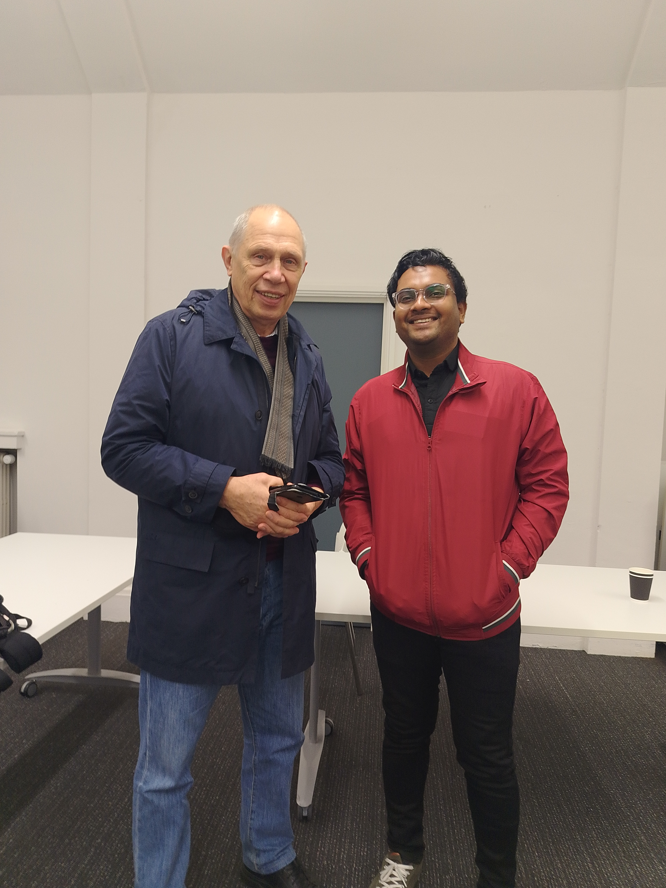

The University of Lancaster's funded Winter School has become a hallmark for aspiring mathematicians and professionals to enhance their knowledge and skills. This transformative program blends academic depth with practical insights, making it a must-attend event for mathematics enthusiasts.
Highlights of the Program
- Sessions with Top Mathematicians: Attendees met renowned professors and researchers who shared insights into groundbreaking discoveries and current trends.
- Collaborative Projects: Participants had the opportunity to work on collaborative projects, fostering teamwork and interdisciplinary learning.
- Networking: Informal discussions, panel debates, and group meetups enabled participants to build lasting academic and professional connections.

Key Learnings
The Winter School left participants with valuable takeaways, including:
- Opportunities to engage directly with top researchers and learn about their approaches to solving complex problems.
- An in-depth understanding of diverse mathematical areas, including algebra, geometry, statistics, and machine learning.
- Skills to tackle interdisciplinary challenges by combining mathematical techniques with computer science and economics.

Discrete Mathematics and Machine Learning Applications
Discrete mathematics is a fundamental branch of mathematics that deals with structures such as graphs, sets, and algorithms. Its principles form the backbone of computer science and machine learning. For example, graph theory is widely used in social network analysis, while combinatorics aids in feature selection and optimization in machine learning models. The Winter School provided participants with insights into how discrete mathematics is applied to solve complex problems in data science and artificial intelligence, making it an invaluable tool for future advancements.
Conclusion
We would like to extend our heartfelt thanks to the University of Lancaster for organizing this incredible Winter School. The opportunity to learn from esteemed researchers and collaborate with peers has been invaluable. Such initiatives truly empower aspiring mathematicians and foster a spirit of innovation and academic excellence.